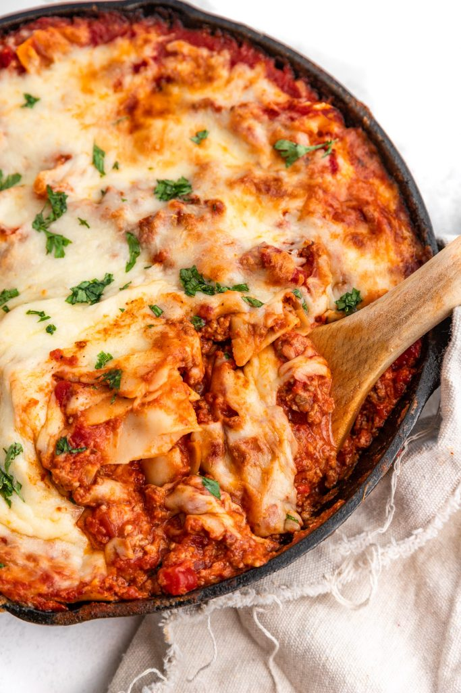

Lasagna Recipe

Lasagna
Cast iron lasagna is an incredibly easy take on lasagna, made all at once in a skillet with a cheesy, meaty tomato sauce and it’s delicious and hearty. Total family favorite!
Ingredient List:
- 1 tbsp olive oil
- 1 small onion, finely diced
- 3 garlic cloves, minced
- 1 lb ground beef 500 g
- 1/2 tsp allspice or seven spices
- 1/2 tsp salt
- 1/4 tsp black pepper
- 1 can diced tomatoes 14 oz (400g) each can
- 2 cans tomato sauces 14 oz (400g) each can
- 1/2 tsp dried basil
- 1/2 tsp dried oregano
- 1/2 tsp salt
- 1/4 tsp black pepper
- 6 oz evaporated milk 170g
- 12-14 no boil lasagna noodles 8 oz , 250g
- 1 cup shredded mozzarella cheese
Steps:
- Heat olive oil in a large cast iron skillet. Once hot, add the diced onions and cook for a few minutes until softened. Add garlic and cook for another minute.
- Add the ground beef to the skillet, and brown. Once beef has cooked through, drain the fat, then stir in the all spice (or seven spices), salt and pepper.
- Add the diced tomatoes, and tomato sauce and mix to combine. Stir in the basil, oregano, salt and pepper.
- Add the evaporated milk- anywhere between 1/2 can to a full can depending on how creamy you want the sauce. Stir again.
- Break the lasagna noodles over the skillet into the sauce. Press the noodles down into the sauce to cover them as much as possible. Cover the skillet with a lid, and simmer on medium for 15-20 minutes until noodles have cooked through. Preheat the oven to 350 F (180C) while noodles are simmering.
- Add a handful of mozzarella cheese and stir to combine, Top the lasagna with the rest of the shredded mozzarella cheese. If you like, place the skillet in the oven for a few minutes on broil to get the top golden brown and bubbly. Enjoy!
Return to Homepage